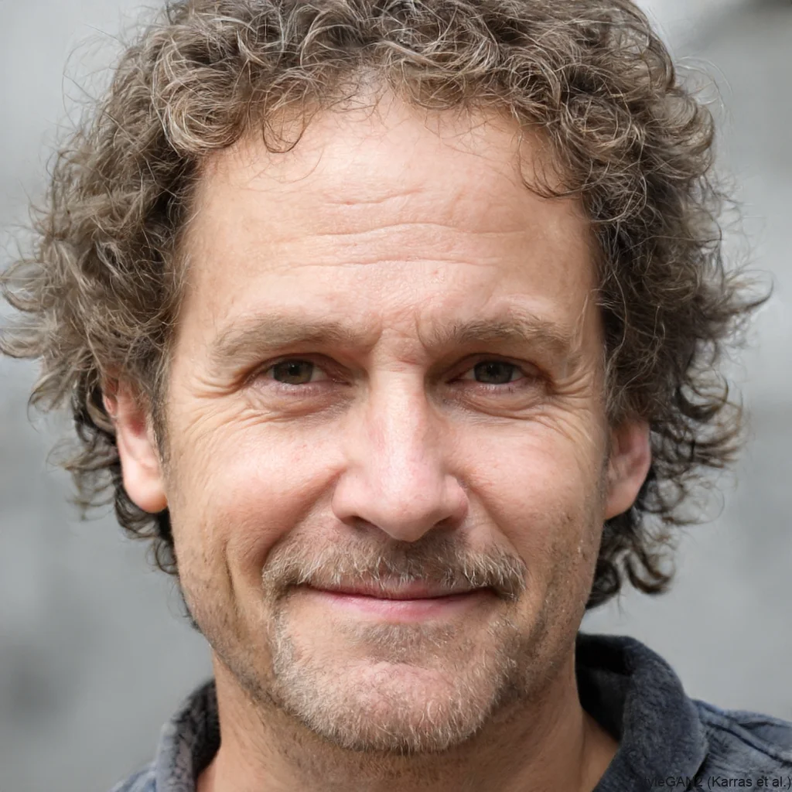

"Working with this web designer was an absolute delight! The attention to detail and creativity in the dynamic typographies exceeded our expectations. The Sun Animation, in particular, was a standout with its smooth transitions and captivating design. Highly recommend for any project requiring unique and engaging visuals!"
"I was blown away by the level of professionalism and skill displayed in the CSS ZenGarden challenge. The Brutalism theme was executed flawlessly, showcasing a strong grasp of CSS and design principles. The final product was both functional and aesthetically pleasing. I am extremely satisfied with the results!"
 "The Useless Websites project was a perfect blend of humor and technical prowess. Each site was a joy to explore, especially the Cat Translator which had us laughing for hours. The creativity and user-centric design approach really stood out. It was a pleasure collaborating on such a fun and innovative project!"
"The Useless Websites project was a perfect blend of humor and technical prowess. Each site was a joy to explore, especially the Cat Translator which had us laughing for hours. The creativity and user-centric design approach really stood out. It was a pleasure collaborating on such a fun and innovative project!"
"The dynamic poster for The Dark Knight was truly impressive. The meticulous attention to detail and the seamless animation brought the iconic prison scene to life. The ability to translate such a complex vision into HTML and CSS is commendable. I couldn't be happier with the outcome!"